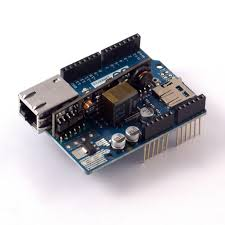

Our Project

Description
For academic purpose we are using an Arduino to log different sensors data and store them on a cloud service. The retreived data is accessible throught the Data page of this website. Our system is build of three different hardware components - The Arduino UNO and telemetry, sound, temperature sensors - An ArduinoEthernetShield for ethernet communication - A Grove base shield board which simplifies the wiring of electronics The data is stored in an SQL database through a mobile service and is displayed on this website.

Technologie
Duis
Curabitur
Pellentesque
Aenean